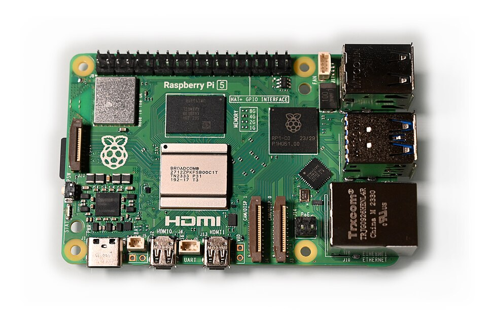

Adiós anuncios en toda la casa: Pi-hole en Raspberry Pi
Qué vas a lograr
Un bloqueador de anuncios y rastreadores que funciona a nivel de red: una vez instalado, filtra la publicidad de todos los dispositivos conectados a tu WiFi —móviles, tablets, ordenadores, Smart TV— sin instalar nada en cada uno. Las páginas cargan más rápido, gastas menos datos y reduces el rastreo publicitario de un plumazo. Este proyecto está en marcha en nuestro propio home lab.

Pi-hole es software libre que actúa como servidor DNS de tu red: cuando un dispositivo pide la dirección de un dominio de publicidad o rastreo, Pi-hole simplemente no la resuelve. El anuncio nunca llega a descargarse.
Lista de materiales mínima
Pi-hole es famoso por funcionar en hardware muy modesto. Esto es todo lo que necesitas:
| Qué | Por qué lo necesitas | Precio orientativo (sep 2026) | Enlace |
|---|---|---|---|
| Raspberry Pi con conexión de red (cualquier modelo reciente) | Ejecuta Pi-hole 24/7 con un consumo mínimo. Vale desde una Pi Zero 2 W hasta una Pi 5. | Entre $15 y $90 según el modelo | Ver precio |
| Tarjeta microSD (32 GB o más, clase A1/A2) | Almacena el sistema operativo y Pi-hole. Una tarjeta de calidad evita corrupciones. | Entre $8 y $20 | Ver precio |
| Fuente de alimentación adecuada al modelo | Una fuente insuficiente causa reinicios aleatorios justo cuando más la necesitas. | Entre $10 y $25 | Ver precio |
| Caja o carcasa (opcional pero recomendada) | Protege la placa del polvo y de toques accidentales. | Entre $8 y $18 | Ver precio |
| Cable Ethernet (recomendado) | Para conectar la Pi por cable al router: más estable que el WiFi para un servicio crítico. | Entre $8 y $15 | Ver precio |
Antes de comprar
Pi dedicada o compartida con otros servicios
Pi-hole puede convivir con otros servicios ligeros en la misma Raspberry Pi (un servidor de archivos pequeño, por ejemplo), y mucha gente lo hace sin problemas. Pero ten en cuenta una cosa: Pi-hole se convierte en el DNS de toda tu casa. Si esa Pi se reinicia por un experimento con otro servicio, toda la red se queda sin resolución de nombres hasta que vuelve.
Recomendación práctica: si es tu primer Pi-hole, dedícale una Pi barata en exclusiva (una Zero 2 W o una Pi 3/4 de segunda mano rinden de sobra). Cuando el servicio es crítico para toda la red, la estabilidad manda. Si más adelante quieres consolidar servicios, hazlo cuando ya tengas claro el mantenimiento.
Por qué la conexión cableada es preferible
Pi-hole responde a cada petición DNS de cada dispositivo de tu casa, decenas de veces por minuto. Por WiFi funciona, pero el cable elimina dos problemas de raíz: la latencia variable del WiFi y las desconexiones momentáneas que dejan a toda la red sin DNS durante unos segundos.
Si tu router está lejos, un cable largo o un adaptador PLC es mejor inversión que una Pi más potente: para Pi-hole, la red estable importa más que la CPU. Dicho esto, si el cable es imposible, el WiFi es aceptable siempre que la señal sea buena y la Pi tenga IP fija.
El proyecto paso a paso (resumen)
- Prepara la Raspberry Pi con su sistema operativo y asígnale una dirección IP fija en tu red (en el router o en la propia Pi). Este paso es importante: si la IP del DNS cambia, todo deja de funcionar.
- Instala Pi-hole siguiendo el método oficial del proyecto (instalador o contenedor Docker, según tu preferencia). El asistente de instalación te guía por las opciones básicas.
- Apunta tu red al nuevo DNS: configura tu router para que reparta la IP de la Pi como servidor DNS a todos los dispositivos. Así no tienes que tocar cada móvil y ordenador uno por uno.
- Ajusta las listas de bloqueo desde el panel web: las listas por defecto ya bloquean la mayoría de la publicidad; puedes añadir listas adicionales según tus necesidades.
- Revisa y afina: si alguna página legítima falla, el registro de consultas del panel te muestra qué dominio se bloqueó para ponerlo en la lista blanca.
Qué esperar (y qué no)
Seamos honestos sobre los límites, porque un Pi-hole bien entendido da muchas más alegrías que uno con expectativas irreales.
- Sí bloquea: banners y ventanas de publicidad en páginas web, rastreadores de analítica y publicidad, y muchos anuncios en apps móviles que se sirven desde dominios dedicados. La navegación se nota más rápida y ligera.
- No bloquea los anuncios integrados de YouTube: YouTube sirve sus anuncios desde los mismos dominios que los vídeos, así que el bloqueo por DNS no puede distinguirlos. Para eso sigue haciendo falta un bloqueador en el navegador.
- No sustituye a un antivirus ni te protege de phishing, malware o páginas fraudulentas por sí solo. Es una capa de privacidad y comodidad, no una solución de seguridad completa.
- Algunas páginas se pueden romper: sitios que dependen de dominios de terceros para funcionar (reproductores de vídeo, sistemas de comentarios) a veces fallan. La solución es poner ese dominio en la lista blanca desde el panel, un proceso de un minuto.
- No filtra el tráfico fuera de tu red salvo que configures VPN para usar tu Pi-hole desde el móvil cuando estás fuera de casa, algo posible pero que requiere un paso adicional.
Con esas expectativas claras, Pi-hole es uno de los proyectos con mejor relación esfuerzo-beneficio de todo el home lab: una tarde de instalación a cambio de años de navegación más limpia en todos tus dispositivos.
Preguntas frecuentes
¿Pi-hole ralentiza mi internet?
No de forma perceptible. Las respuestas DNS se sirven en milisegundos desde tu red local, y al no descargar los anuncios las páginas suelen cargar más rápido que antes.
¿Funciona con cualquier router?
En la mayoría sí: basta con poder cambiar el servidor DNS que el router reparte por DHCP. Algunos routers de operadora lo tienen capado; en ese caso puedes configurar el DNS dispositivo por dispositivo o poner tu propio router detrás del de la operadora.
¿Necesito una Raspberry Pi 5?
No. Pi-hole consume muy pocos recursos y funciona bien incluso en modelos modestos. Invierte la diferencia en una buena tarjeta microSD y una fuente decente, que es donde realmente se juega la fiabilidad.
¿Bloquea anuncios en el móvil fuera de casa?
Solo si tu móvil usa tu Pi-hole como DNS también fuera de casa, lo que requiere configurar una VPN hacia tu red doméstica. Dentro de casa funciona automáticamente para todos los dispositivos conectados a tu WiFi.
Rangos de precio orientativos, verificados en septiembre de 2026. Los precios y la disponibilidad pueden cambiar.